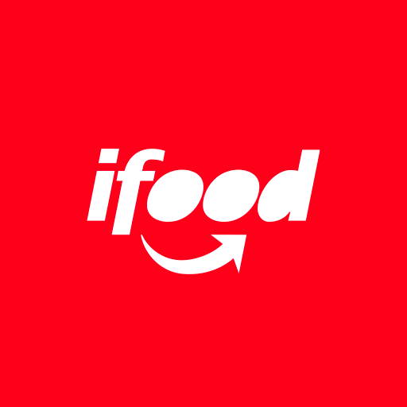
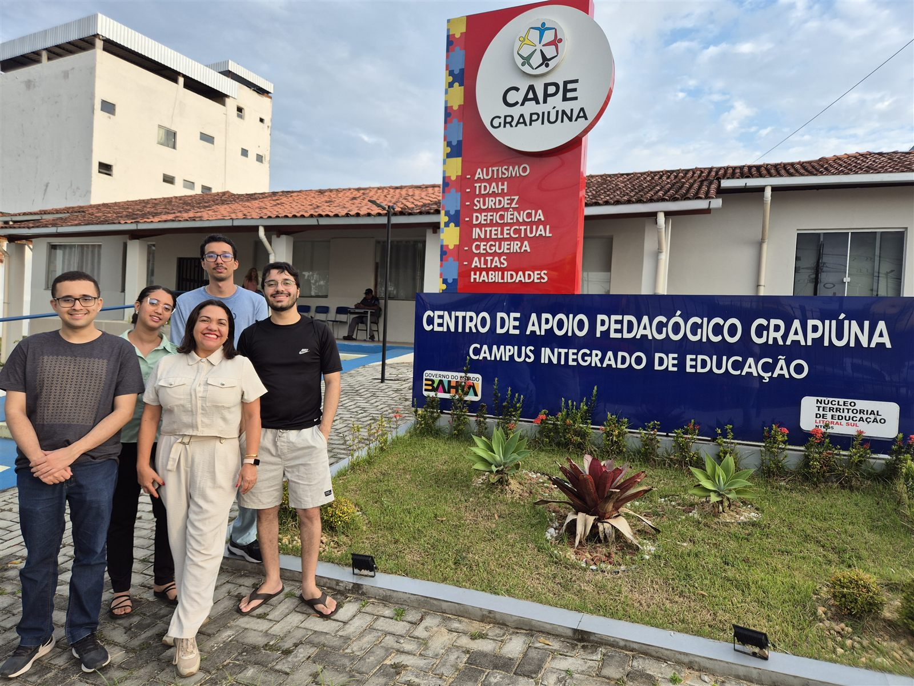

Estágio de GenAI · Data Governance
No time de Data Governance, crio serviços e soluções com IA, monto pipelines e cuido do suporte e da manutenção do que já está no ar.
Estudante de Ciência da Computação na UESC e estagiário de GenAI no time de Data Governance do iFood.
ExperiênciaTrajetória

No time de Data Governance, crio serviços e soluções com IA, monto pipelines e cuido do suporte e da manutenção do que já está no ar.

Em desenvolvimento
Desenvolvo a solução e lidero a equipe voluntária. O site institucional está no ar: os professores editam textos, fotos, eventos e materiais numa área própria, sem mexer no layout.
Próximo passo
Uma IA que ajuda o professor a elaborar os relatórios dos alunos.
Acessar o siteResidência · CEPEDI
Liderei os contratos inteligentes em Solidity da plataforma que simulava o DREX, com as lógicas de leilão, aluguel e venda.
Ver vídeoArquiteturei e desenvolvi o app em Kotlin: a interface, a integração com a Ethereum e a geração dos comprovantes.
Ver vídeo